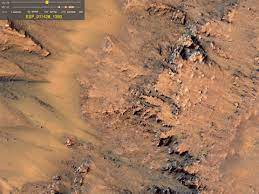
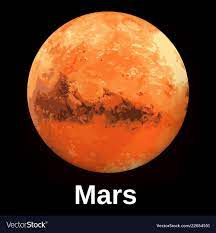

mars
- Mars is the fourth planet from the Sun and the second-smallest planet in the Solar System, being larger than only Mercury. In English, Mars carries the name of the Roman god of war and is often referred to as the "Red Planet". The latter refers to the effect of the iron oxide prevalent on Mars's surface, which gives it a reddish appearance distinctive among the astronomical bodies visible to the naked eye. Mars is a terrestrial planet with a thin atmosphere, with surface features reminiscent of the impact craters of the Moon and the valleys, deserts and polar ice caps of Earth.
- 
- 
- The days and seasons are comparable to those of Earth, because the rotational period as well as the tilt of the rotational axis relative to the ecliptic plane are similar. Mars is the site of Olympus Mons, the largest volcano and highest known mountain on any planet in the Solar System, and of Valles Marineris, one of the largest canyons in the Solar System. The smooth Borealis basin in the Northern Hemisphere covers 40% of the planet and may be a giant impact feature.[19][20] Mars has two moons, Phobos and Deimos, which are small and irregularly shaped. These may be captured asteroids, similar to 5261 Eureka, a Mars trojan. Till the date it is said that MARS is the planet which is most investigated and rescearced on.